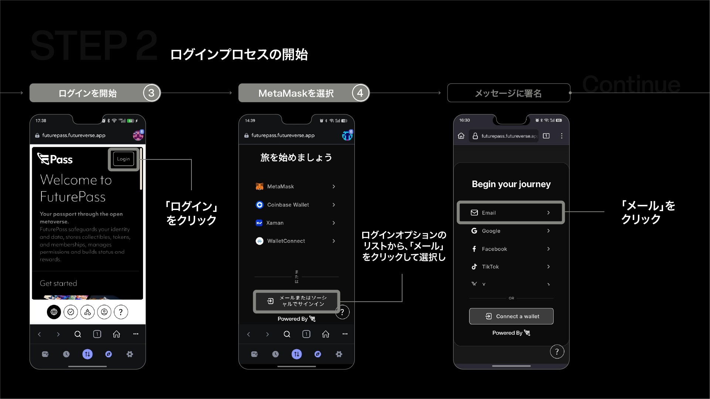
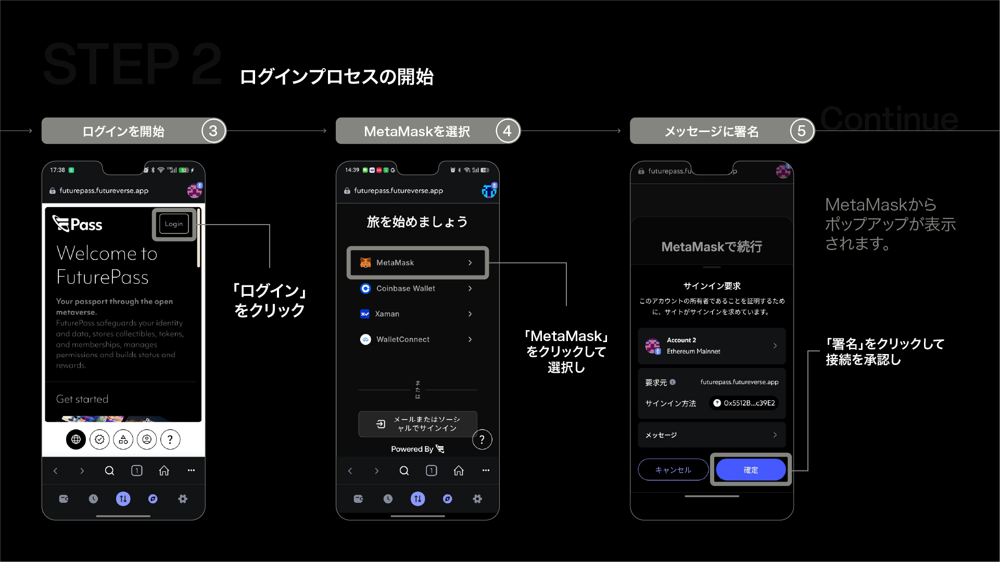
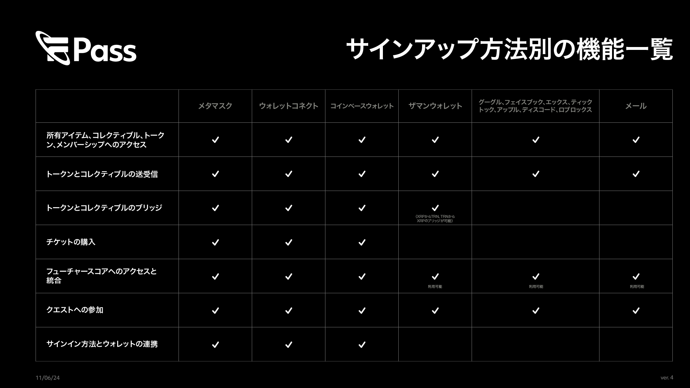
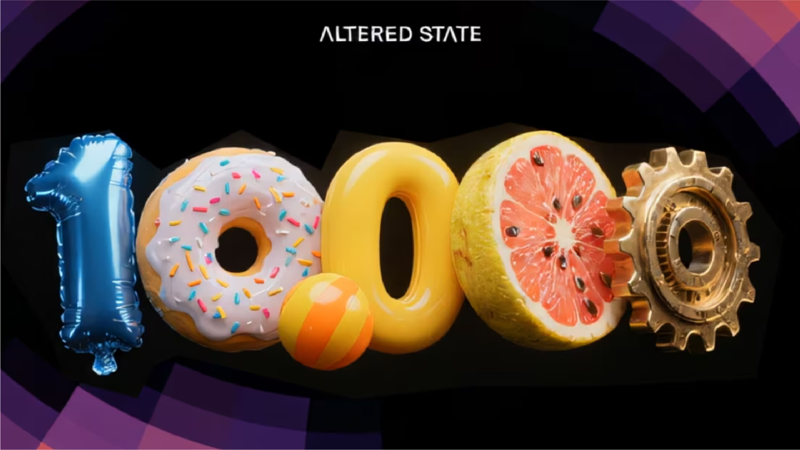
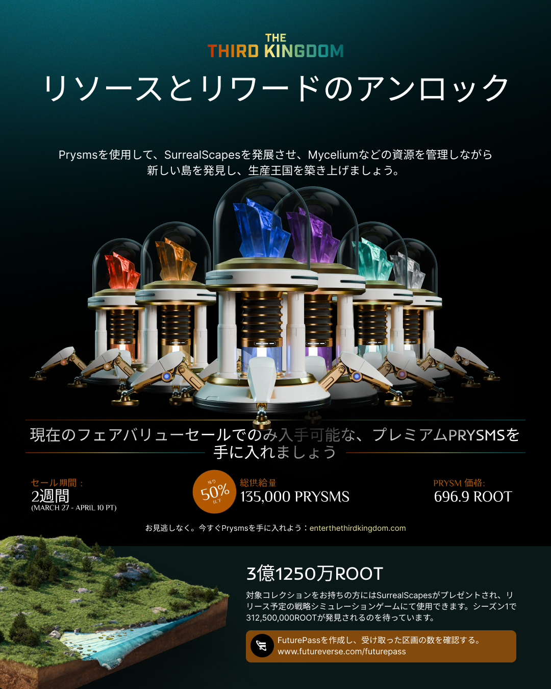
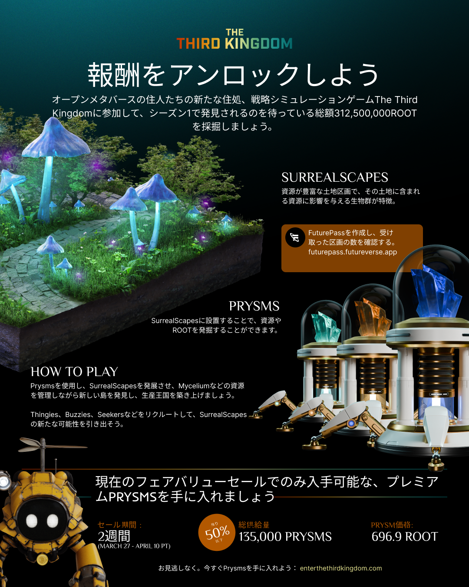

JP Localization, GTM & Product Communication
Simplifying Web3 onboarding, rewards, and ecosystem communication for the Japanese market.
I led JP localization for Futureverse's Japanese market entry — designing onboarding flows, education content, and GTM assets for a Web3 product that needed to be both technically accurate and approachable for Japanese users new to wallet-based products.
{kind=link}
{kind=link}
Localized product communication for a complex onboarding ecosystem.
Futureverse users needed to understand FuturePass account creation, sign-in methods, Root Rewards, referral mechanics, token-related actions, and broader ecosystem participation. The work was not just translation. It was about making advanced product flows understandable and trustworthy for Japanese users.
That meant turning product intent into clearer localized guides, campaign assets, webinar support materials, and feedback-informed communication that could work across both beginner and Web3-ready audiences.
Role Details
Making Web3 onboarding understandable and trustworthy for Japanese users.
Futureverse users needed to understand FuturePass, wallet connection, sign-in methods, Root Rewards, referrals, token-related actions, and ecosystem participation. The challenge was not only translation, but reducing friction, building trust, and creating repeatable communication for Japanese users.
The communication needed to stay technically accurate while remaining approachable enough for people who were new to wallet-based products.
Feedback-informed localization and product communication.
- Localized onboarding and product education content
- Created and adapted Japanese GTM and campaign assets
- Reviewed LINE and community engagement signals
- Used user interviews, Google Forms, and cross-team analytics from the NZ team
- Communicated findings and user feedback to the Futureverse design team
- Worked in Figma with shared GDD references and asset libraries
- Supported consistency across guides, campaign visuals, and product communication
Signals in, clearer communication out.
Inputs
- LINE engagement and community response
- Cross-team analytics from the NZ team
- User interviews
- Google Forms
- Webinar questions
- Repeated support / confusion points
Outputs
- Clearer onboarding guides
- Improved Japanese explanations
- Better FAQ / support communication
- Feedback passed to the design team
- Better alignment between product education and campaign assets
Two paths for two levels of Web3 familiarity.

Email-Based FuturePass Onboarding
User type: Web3 beginners
Goal: Reduce wallet-first friction
Flow: Open FuturePass → choose email → enter email → verify code → complete account

MetaMask-Based FuturePass Onboarding
User type: Web3-ready users
Goal: Support wallet ownership and ecosystem access
Flow: Open MetaMask browser → access FuturePass → choose MetaMask → approve connection/signature → complete account
{kind=link}
{kind=link}
Reusable assets that clarified key actions.
FuturePass Account Creation
The core educational job was helping users understand the difference between simple email onboarding and wallet-based access.
Root Rewards Registration & Redeem
Users needed to understand points, referrals, reward logic, and why they should return after account creation.

CENNZ to ROOT / Advanced Token Guidance
More advanced token-related actions required clearer prerequisites and more careful step-by-step explanation.

Sign-Up Method Comparison
A comparison view helped reduce decision friction by clarifying which sign-in path fit which user type.
Turning technical product education into market-ready communication.
Visual communication helped make Web3 concepts feel more approachable, premium, and campaign-ready for the Japanese market. Beyond step-by-step guides, localized campaign assets supported announcements, community education, webinars, rewards communication, and ecosystem updates.

{kind=link}
{kind=link}
Shared references kept localized assets aligned with product direction.
The work was managed inside Figma, where the team used shared GDD references, asset libraries, and collaborative design files. This helped keep localized content, campaign visuals, and product education materials aligned with the broader Futureverse brand and product direction.
Shared GDD → Asset Library → Localized Guides → GTM Assets → Community Feedback → Design Team Feedback
Localized campaign graphics for Japanese community communication.
Alongside onboarding and education materials, I also designed Japanese SNS visuals and banner assets to support campaign communication. These helped Futureverse present reward-related updates, participation prompts, and ecosystem messaging in a clearer, more locally adapted format.


Clearer communication supported onboarding and activation.
Metrics are project-reported and directional — shared by the Futureverse team, not independently verified.
Project-reported +25-35% wallet registrations
Localized onboarding and communication contributed to improved wallet registration performance.
Stronger LINE engagement
Localized announcements and user education supported more active community touchpoints.
Stronger webinar engagement
Clearer Japanese communication helped support webinar participation and follow-up education.
Web3 localization needed trust-building as much as accuracy.
This project taught me that Web3 localization is not only language translation. It requires product understanding, UX simplification, trust-building, visual communication, and a feedback loop between users, community channels, and the product team. The key challenge was making advanced ecosystem actions feel approachable without removing the accuracy required for wallet and token-related workflows.
Contact
If this mix of localization, product communication, and implementation-minded design feels relevant to your team, I'd be glad to connect.